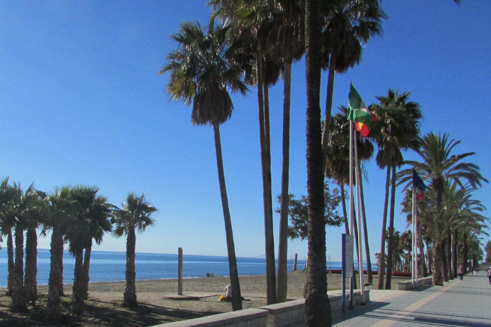
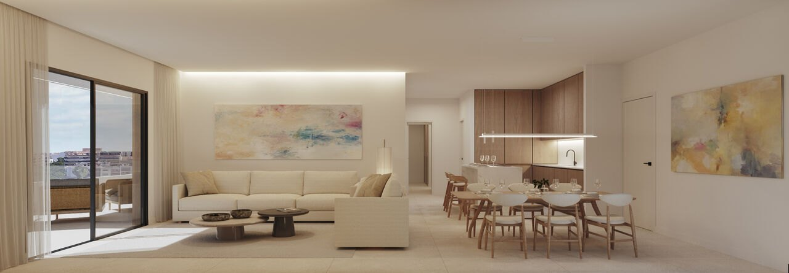
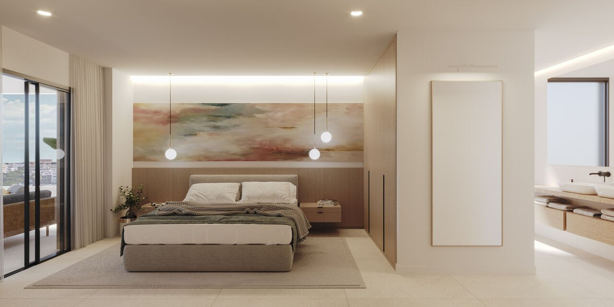
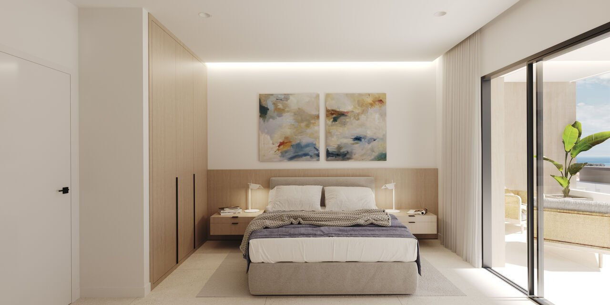
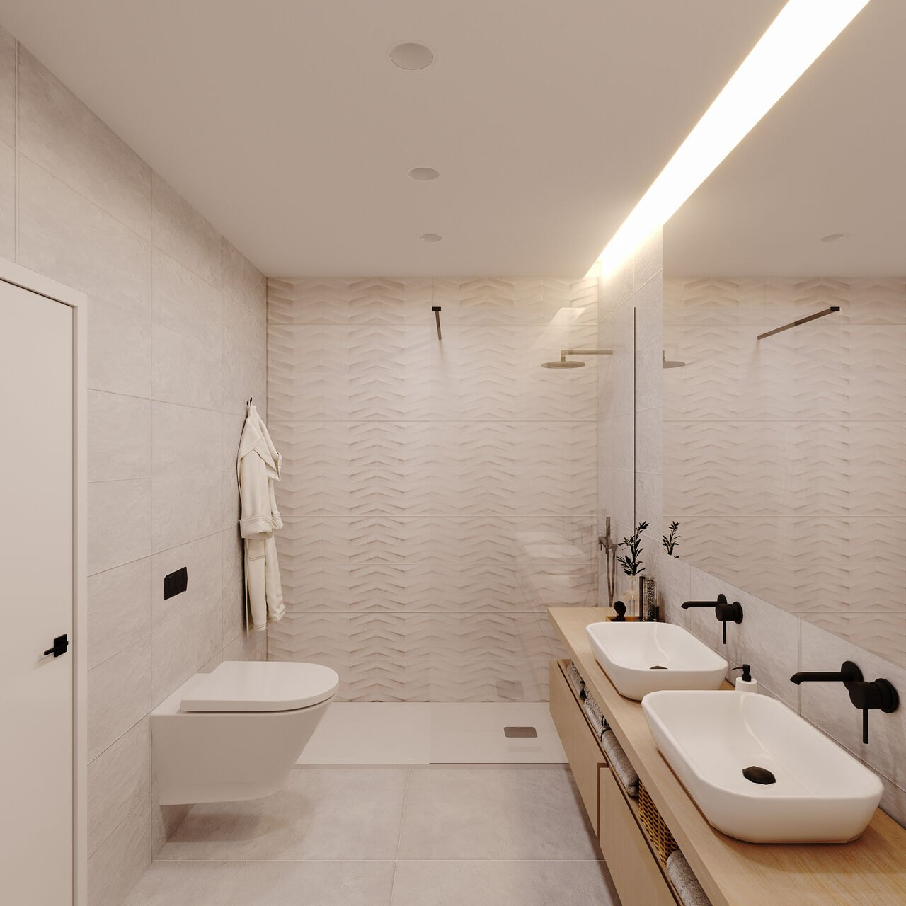

Best For
Buyers who want a town to live in year-round, a few minutes from Puerto Banús.

A working Andalusian town inside the municipality of Marbella, with a street grid, a beach and a boulevard, priced below the resort addresses on either side.
San Pedro was a town before the coast became a resort. It began in 1860 as an agricultural colony, which is why the centre is a grid of ordinary streets around a church square, with a market, schools and a health centre rather than a parade of restaurants. People live here through the winter.
It runs from the Guadalmina river in the west, where Estepona and Benahavís begin, to the Guadaiza in the east, where Nueva Andalucía begins. Between those two rivers the price moves far more than the distance does.
Buyers who want a town to live in year-round, a few minutes from Puerto Banús.
The old coast road runs in a tunnel under the town, and the surface above it is a park.
Guadalmina and the beachside strip price like Marbella. The pueblo does not.
The A-7 still separates the beachside communities from the town centre.
Most of what sets San Pedro apart was here before the coast was developed.
The old N-340 was buried through the town and the surface handed back as a park of about 11,000 m²: fountains, a cycle lane, five playgrounds and an amphitheatre seating 500. It opened in 2014, and it is why the centre is as quiet as it is.
The baths at Las Bóvedas date from the second century and the basilica at Vega del Mar from the late fourth, both near the mouth of the Guadalmina. Little else on this stretch of coast is still standing from that far back.
The course opened in 1959, the first in Marbella and six years ahead of Río Real. The residential grid that grew around it is the most expensive part of San Pedro after the beachside strip.
The agricultural colony of 1860 gave the town its grid, its street names and its industrial remains. It is why the centre reads as a Spanish town and not as a development.
Photography: Dcarolina.2000 -- via Wikimedia Commons (CC BY-SA 4.0).
Use the area average for orientation only. New-build pricing depends heavily on the exact location, specification and views.
Indicative asking-price averages for resale homes in August 2026. Idealista revised its method in July 2026, so read these against the June 2026 figures on the other area pages as an approximation rather than a like-for-like comparison. The spread within the town is the point: the beachside strip asks about half as much again as the pueblo.
Only projects currently matching this area are shown. Price and availability are confirmed before a viewing.







Fifteen three-bedroom apartments still available in the centre of San Pedro Alcántara, with parking, storage and underfloor heating in the price.


19 apartments and duplex penthouses in San Pedro Alcántara, a short walk from the beach, with a rooftop pool, gym and solarium.


A 139-home urban resort near San Pedro and Puerto Banús, with four pools, a full wellness hub and the beach within walking distance.


Seven gated villas walking distance from the beach in Cortijo Blanco, each with four en-suite bedrooms, a private pool and an optional rooftop solarium.


34 apartments and penthouses in Marbella's Guadalmina Golf Valley, moments from San Pedro and Puerto Banús.
The average asking price for resale homes was €4,600 per m² in August 2026, below the Marbella municipal average of €5,608 and well below neighbouring Nueva Andalucía at €6,048. The spread inside the town is wide: the pueblo averaged €3,722 while Linda Vista, Nueva Alcántara and Cortijo Blanco averaged €5,644.
Yes. It is a district of the municipality of Marbella, roughly ten kilometres west of the town centre, with its own centre, services and identity rather than the character of a suburb.
The old N-340 coast road was put in a tunnel under the town and the surface above it turned into a park, opened in 2014. It carries about 11,000 m² of green space, fountains, a cycle lane, five playgrounds and an amphitheatre for 500 people, and it is the main reason the centre is quiet.
They meet at the Guadaiza river and they are not the same proposition. Nueva Andalucía is built around golf and second homes and averages €6,048 per m². San Pedro is a working town with a school run and a weekly market, and averages €4,600. Puerto Banús is minutes from both.
It depends on what you are paying for. Guadalmina Baja and the beachside strip between the A-7 and the sea carry the highest prices and the shortest walk to the sand. Guadalmina Alta and the pueblo cost materially less and give you the town instead. Which side of the A-7 you end up on changes daily life more than the price gap suggests.
From the beachside communities, yes. From the town centre it is a few minutes by car or bicycle, with the A-7 in between. The seafront promenade runs along the beach itself and continues west towards Guadalmina.
Tell us your budget and priorities. We will reply with matching projects and current availability.